Clicking outside the manipulator will rotate it.
Substance Painter 2018.2 adds long awaited features such as Subsurface Scattering painting that make texturing even easier than before.
Release date : 2 August 2018
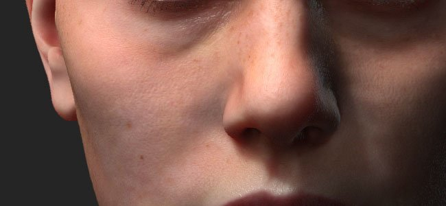
Subsurface scattering is now supported in the realtime viewport and with the Iray renderer.
Subsurface scattering is a mechanism of light when penetrating an object or a surface. Instead of being reflected, like with metallic surfaces, a portion of the light is absorbed by the material and then scattered inside. Many materials in real life have subsurface scattering such as skin or wax.
Our Subsurface effect implementation match very closely both real-time implementations from other game engines as well as other offline renderers. Making it very easy to author scattering textures to use in other applications.
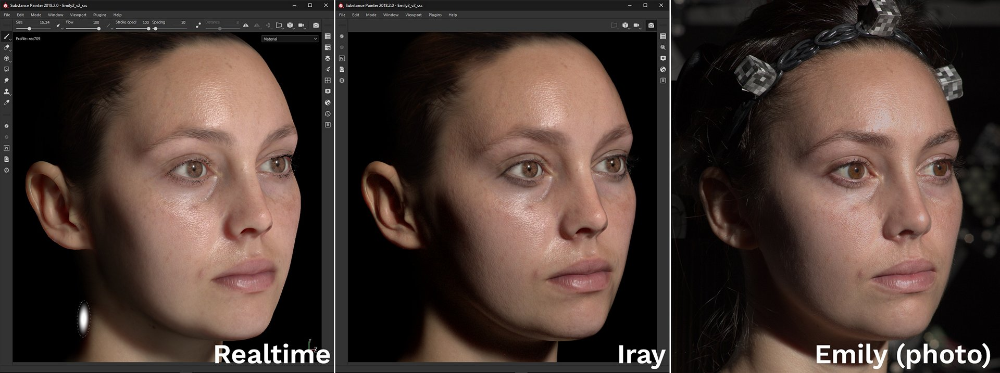
Above is an example with the well know Digital Emily 2 asset. Thanks to the USC Institute for Creative Technologies and members of the Wikihuman project for allowing us to demonstrate our renders with the Digital Emily 2 assets.
(Please note this comparison was made under similar but not exact lighting conditions which may explains visual differences.)
To add Subsurface Scattering in a project follow these few steps :
A more detailed procedure can be found in the Subsurface Scattering documentation.
In order to support Subsurface Scattering in the realtime viewport the shaders in the projects have to be updated.
For custom shaders please refer to the documentation available in the help menu for to know what has changed in the shader API.
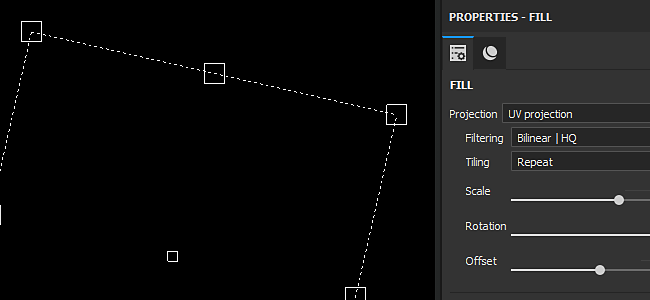
Fill layers controls have been improved to offer manipulators. It is now easier to precisely place and control fill projections.
When using the UV projection a manipulator will appear in the 2D View :
Clicking outside the manipulator will rotate it.
Clicking on the square at the borders will scale/resize it.
Clicking inside the manipulator will translate it.
Use CTRL to affect multiple corner in symmetry.
Use SHIFT to constraint a transformation (translate, rotation or scale).
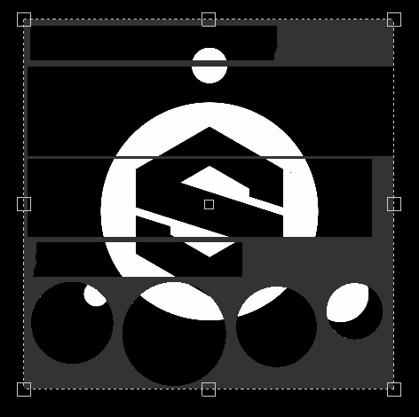
When using the Tri-Planar projection a manipulator will appear in the 3D View :
The dotted cube represent the global projection
Use the W, E or R keyboard shortcut to switch between the Translate, Rotate and Scale mode.
Use the T keyboard shortcut to switch between Local and World orientation for the manipulator.
Use SHIFT to constraint the transformation.
The Tri-Planar cube projection can also be modified in the advanced fill layer properties :
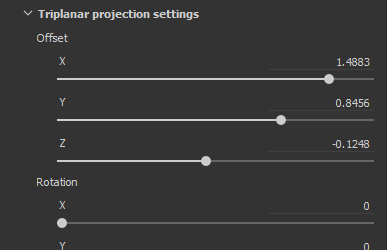
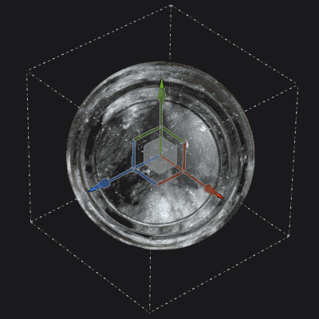
The contextual toolbar at the top of the viewport will also adapt depending of the current projection mode, offering additional tools and controls :
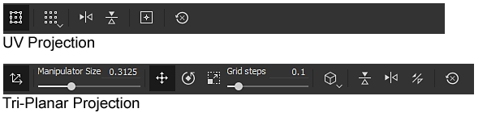
For more details, see the Fill Layer documentation.
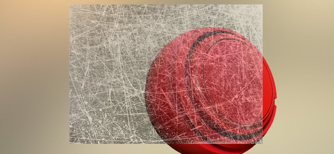
The stencil parameter and projection tool have been improved to support non-square resolutions and non-tilling behaviors.
The default parameter is now set to non-tilling by default. This parameter can be changed in the tool properties :
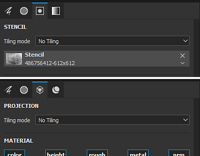
The tilling mode can be set as follow :
This new parameter can be saved in a tool or brush preset, making it easy to share with custom content.
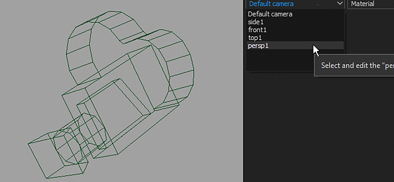
It is now possible to import custom cameras inside Substance Painter alongside the mesh import.
Cameras can be selected to look through them in the 3D viewport and used to render in Iray.
For more details, see the Camera Management documentation.
To import cameras into a project :
Export the mesh for the project with cameras in the same file (with a supported format such as FBX, Alembic or glTF)
Select the "import cameras" settings in the new project window (or project configuration).
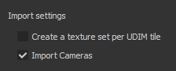
Switch to the desired camera with the dropdown in the viewport or by using the settings in the Display Settings.
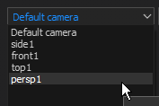
The Camera Settings in the Display Settings window have been extended to control the Camera's properties.
It is possible to switch between cameras, see its ratio and lock its properties to avoid modifying it. A restore button can be used to revert the camera to its initial values.
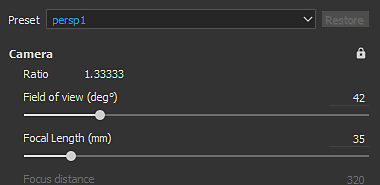
The camera frame (and it's gate) is also taken into account, making it possible to view and paint via a very specific point of view. The frame and gate are displayed over the 3D Viewport and its opacity can be controlled in the Viewport Settings from the Display Settings window :
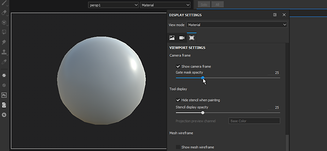
Drag and Drop Materials and Smart Materials onto the ID map :
The drag and drop of content from the shelf into the viewport has been improved. By pressing CTRL while drag and dropping a material it is now possible to choose the ID color that will be used as a mask.
A black mask with a color selection effect will be added to the new layer created in the layer stack. If the same material is drag and dropped onto an other ID color, the already existing layer will be updated and the ID colors will be combined..
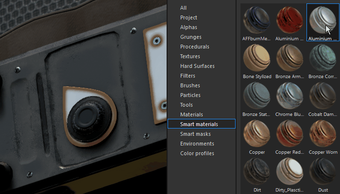
Layer stack drag and drop scroll :
Dragging layers around the layer stack is now with a small window.
When a resource or a layer is dragged near the borders of the layer stack window, it will automatically start to scroll its content.
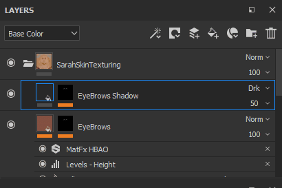
New file formats are now supported for importing meshes and creating new projects :
Substance Painter doesn't offer a way to control which frame of animation should be imported at the moment.
This means that when exporting an Alembic file the frame of reference to be used for painting on the asset has to be already set.
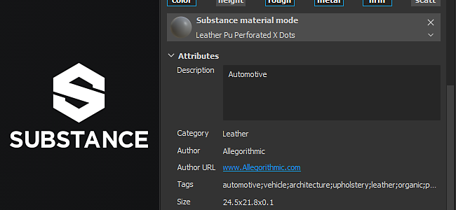
The Substance integration inside Substance Painter has been improved with long awaited requests :
Visible If :
The "Visible if" is a great feature of the Substance file format which allows to hide parameters based on conditions.
This feature provides a more clear list of parameters and contextual settings, giving overall more easy to use materials and filters.
For more details see the Substance Designer documentation.
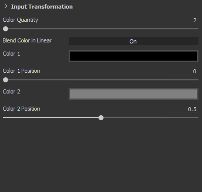
Substance Presets
Substance presets are an easy way to provide advanced tweaks and variations of materials. Many materials on Substance Source have presets, so give it a try !
If a Substance file contains one or more presets, a new dropdown in the parameter list will be available. Select which preset to apply to update the parameters.
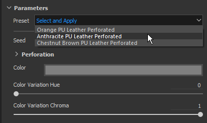
Substance Attributes
Substance attributes are now displayed in the interface, making it easier to retrieve information about a specific file.
Attributes can be viewed in two different location : above the parameters in the properties window or by right-clicking on an asset in the shelf.
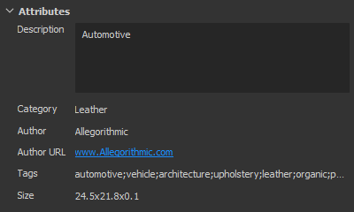
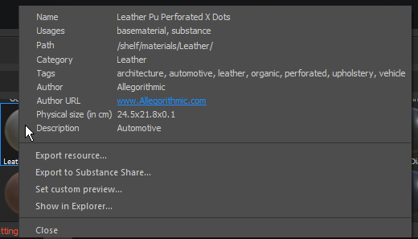
A new sample project named "JadeToad" is now included with Substance Painter. This sample project has the Subsurface Scattering effect enabled by default.
To find the project, use the File > Open Sample... menu entry.
(Released September 25, 2018)
Fixed:
Known issues:
(Released September 11, 2018)
Added:
Fixed:
Known issues:
(Released August 3, 2018)
Fixed:
Known Issues:
(Released August 2, 2018)
Added:
Fixed:
Known Issues: